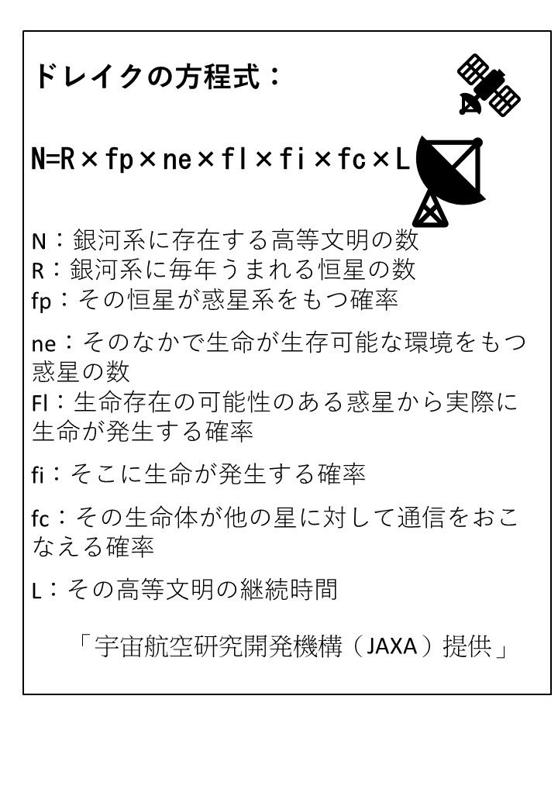

| AI驚愕の未来 | |
| 宮越幸一 | |
| (2018) | |
ＡＩ驚愕の未来
宮越幸一
はじめに
２０１７年がAI
元年であると言われます。私達にはあまりに突然に訪れたことで戸惑いがあり、その後のすさまじい進歩に恐怖感さえ感ずるこの頃です。
AI
が最初に報じられたのが、仕事を奪うということでした。次いでAI
が人類の知力を上回る技術的特異点（シンギュラリティ)を迎えることが様々に報じられています。一体そんなAI
がすさまじい力を発揮する中で、人間はどうして生きていったらいいのか不安が高まります。
AI
の知力はやがて人間を超えて、その後も加速度的に大きくなると予想されています。間もなくそんなAI
が働く人の２人に１人になると考えられています。人間はもはや知的仕事でもAI
に置いて行かれてしまうでしょう。AI
はさらにどんどんと力をつけて人間が離される一方なのです。一体人間はこれからどう生きたらいいのか。
そして迫ってくるのが、AI
の最終選択であるマインド・アップロードです。その選択によって人間の未来が決まるのです。人間の精神をスーパーコンピュータにアップロードして、さらに人間のデッドコピーであるロボットにダウンロードします。それにより、人間はAI
と同様な能力を得ることができると言われます。もう、人間はAI
と遜色なく、働くことができる。これはまさに人間のAI
化と言えます。
本書は、この最終選択に向かうAI と人間の未来を読み解いてみたいと思います。
第一章 高まるAI 不安
仕事が無くなる。人類滅亡に繋がる。などと言われながら、AI
の研究開発は凄まじい勢いで続いています。近頃、毎日何かしらAI
の話題を聞かない日はないくらいです。
テレビではAI
特集番組、新聞でもAI
の新しい成果記事、国際メディアは毎日のようにAI
の動向を報道しています。
以下に主な出来事を列挙してみましょう。
１９９７年：IBMが開発したチェス専用スーパーコンピュータ「ディープ・ブルー」が、チェスの世界チャンピオン、ガルリ・カスパロフに初めて勝ち越した。
２００６年：ニューラルネットワークの多層化に成功。ニューラルネットワークの多層化の発想自体は古くからあったが、コンピュータの性能不足で実現しなかった。
２０１１年：ＩＢＭのワトソンがクイズ番組で人間に勝利した。
２０１２年：画像認識の向上で画像データから自律的に「猫」を特定できるようになった。コンピューターは猫がどういうものであるか人間に教えられること無く、自力で理解した。
２０１６年：「アルファ碁」がプロ棋士に勝利を収めた。
２０１６年３月：Googleが開発したAI 「アルファ碁」が、世界最強の棋士と呼ばれるイ・セドル九段を４勝１敗で退け、世界中を驚愕させた。この「アルファ碁」の強さの秘密はディープラーニングにあるといわれる。
２０１６年：ディープラーニングを起爆剤としたAI が急速に発達し社会に衝撃を与えた。
２０１７年：実用的なシステムも世の中に登場し始めたことで「AI 元年」と呼ばれるようになった。
特に、金融業界は、AI とロボティクスによる雇用喪失の影響を大きく受けると考えられています。財務部門の全体で自動化が進行していくにつれて、業界での雇用機会が失われていくと予測されています。もうその兆候があちこちに見られるようになりました。すでに金融機関の多くで窓口や支店の閉鎖が相次いでいます。大規模なリストラ計画もあるとのこと。AI は、人間の知的な仕事も侵食することから影響は深刻です。人間の仕事の49％ がなくなるという予想も現実的に見えます。
この急激な発達を遂げるAI
に恐怖を感じる人も増えてきました。中でもAI
が私達の仕事を奪うということが現実となろうとしています。
シンギュラリティ論を筆頭とするAI
が人類の敵になるという論調も盛んになって来ているようです。 Ｒ．Ｕ．Ｒ．のロボットの反乱による人類絶滅、或いはターミネーターのスカイネットの反乱のような人類生存危機が現実味を増してきたようにさえ感じられます。
リスクを冒してまでAI
を開発する理由があるのでしょうか。本書では、AI
のメリット、デメリットとともにその研究理由を考察して見たいと思います。
生態系のトップに君臨する人間がなぜ、AI を創るのか
機械であるAI
（人工知能）が、人間よりも上位の存在になるかもしれないのです。
そうなってしまったら、どうしようもなくなります。なぜなら、もしAI
が人間より知力が高い存在となったら、知的に劣る存在の人間がコントロールできるはずがないからです。知的に劣る動物が人間をコントロールできないのと同じことが起こります。それなのに、人間はなぜAI
を創るのでしょうか？
楽をするため ー 人間は食うために働くということから解放されます。仕事はAI
に任せて人間は楽をするんです。
経済的利益のため
欲望を満たすため
科学技術者の名誉のため
・・・
これらの理由は、これまでの他の新技術誕生の場合と同様で、当然に考えられることでしょう。人類滅亡のリスクを越えてまで開発することではないはずです。だからAI
開発には、それ以上の要求があると考えられます。すると何なのでしょうか。
AI 開発の最初の要求は自己の分身欲求
そもそもAI 開発の第１の欲求は自己の分身を欲しいということでした。よく忙しい時もう１人の自分があったらいいなと考えたことがあるでしょう。分身欲求です。これがAI が求め続けられてきた理由です。それが様々な自動機械になり、ロボットになり、さらには今日のAI 開発に繋がったのです。この分身欲求が実現したかに思えるAI の登場。実際に様々な場面でAI が活躍するにつれて、逆に不安が生まれてきました。昨今言われているのがAI が仕事を奪うということです。さらに、あまりに凄いAI の活躍に恐怖心さえ生まれてきました。
AI の未来に対する不安
AI
やロボットに対する不安や恐怖は、どこから来るのでしょう。自己の分身欲求がかなった今日、今度は自分の分身であるAI
に仕事を取ってかわられるという不安が生まれてきました。最近のAI
に対する不安の多くがこの仕事が奪われるということにあるようです。多くの書籍がこのAI
不安を特集しています。これまでも様々な技術開発によって、人間の仕事は置き換えられてきましたが、今回のAI
の場合はそれとはまた違った様相がみてとれます。
それはAI
が知的な能力がどんどん高まり、ほとんどあらゆる仕事をこなせるようになると考えられるからです。さらにコンピュータの急激な発達によって、AI
の能力は桁違いに向上します。人間がこれまで行ってきた仕事の大半がAI
に置き変わってしまう事態が予想されています。これまでの自動化による仕事の置き換えとは訳が違うのです。
もちろんAI
に対する期待もあるのですが、不安や恐怖のほうが大きいといえます。
それでも、AI
開発は、とどまるところを知りません。それはAI
が単なる分身ではなく、もっと根本的な人類の欲求が潜在しているからと考えられます。
以下本書では、AI
開発に潜在する欲求とAI
の未来について深く考えてみたいと思います。
第二章 地球文明の主役交代―人間からAI に
突然地球文明の主役交代と書くと驚かれるかも知れませんが、それほどAI
の進化は、圧倒的で、人間の存在は急速に低下することは必至です。
なぜなら、AI
は学習スピードも速く、人間のように疲れることなく、休むことも眠ることもなく、学習し働き続けることができるからです。将棋や囲碁でAI
が人間を打ち負かしたように、復習やシミュレーションを繰り返すことで、驚くほどの進歩を遂げることができます。しかも、AI
の能力は、コンピュータの進歩で加速度的に増大しています。
この加速度的な進化を遂げるAI
によって人類が絶滅するという悲観的な予測もあるほどです。 以下の章で順次主役の座を追われる人間のことを述べていきたいと思います。
最近の世の中の変化、科学技術の発達は、加速度的。まさにエクスポネンシャル（指数関数的）な変化が目立ってきました。エクスポネンシャルは、ディストラクティブ（destructive）な変化です。破壊、滅びのサインともいえます。
人類の文明の破綻が近づいてきた兆しとも言えるでしょう。そのとき人類は文明の主役でなくなり、その座をAI
に譲ることになります。以後の文明はAI
が創るのです。人間は脇役でしかなくなります。シンギュラリティは、文明の主役交代を意味することになります。その先どうなるか分りませんが、人類が滅亡するという予測も現実味を帯びてきます。滅亡の理由はいろいろ考えられますが、その中にはAI
が人間を敵とみなして攻撃するというシナリオも含まれています。
いずれにしても、滅亡が迫ると人類は生存の証を残したいという欲求に駆られることでしょう。この生存の証をしてくれるのがAI
であると考えられるのです。AI
は、その桁外れの学習力とスピードで、せいぜい100万年という人類史上の出来事などたちどころに学んでしまいます。そして、たとえ人類が滅亡した後でも、AI
は人類史の生き証人として長く生存を続けることができるのです。
宇宙文明の必然
フェルミのパラドックスから
我々人類は、長く地球外生命体との遭遇を待ち望んできました。しかし、今日にいたるまで遭遇はおろか、地球外生命体の存在すら確認できていないのが現状です。なぜ人間は地球外生命体と出会う事ができないのでしょうか。
地球外生命の存在可能性が高い一方で、彼らとの接触が皆無であるという矛盾は、フェルミのパラドックスと呼ばれ、人類が直面する最大の難問の一つになっています。このフェルミのパラドックスは多くの識者の頭を悩ましてきました。そして、この難問に対してこれまで多くの説明がなされています。
AI
の必要性はこのフェルミのパラドックスに関係していることを示したいと思います。AI
開発の欲求は、人類の根源的な欲求に関係しているのです。
地球文明が宇宙文明になる日
地球外文明と交信したいという試みに乗り出したのが電波天文学者のドレイクです。彼はアメリカ国立電波天文台の26 メートルもあるパラボラアンテナを使用して、実際に「宇宙文明から発せられた電波」を探す観測計画「オズマ計画」を敢行しました。
ドレイクが「オズマ計画」を実行するにあたって提案したのが、銀河系内の宇宙文明の数を算出する「ドレイク方程式」だったのです。

私たちの太陽系が属している銀河系には、二千億個もの恒星があるといわれています。そして、地球の近傍だけでもすでに300
個を超える系外惑星が発見されていますから、中には生命を発生させ、高度な文明をもつ惑星があっても不思議ではありません。
銀河は私たちのいる銀河系(天の川銀河)以外にも無数に存在します。ＮＡＳＡのレポートはこれまでの予測をはるかに超える２兆個もあると推定しています。
すなわちその２兆個分だけドレイクの方程式が存在することになります。各々の銀河系にも10個の文明があると仮定すれば、単純計算で１０×２兆個すなわち２０兆個の文明があると推察されます。こうなると、もはや知的生命は存在すると考えるのが自然です。
しかしながら、ドレイクの方程式が想定しているところは、星間通信技術を持った高度な文明。
問題になるのがfc
(星間通信技術獲得確率)の項です。確かに、知的文明の存在は天の川銀河だけを考えた場合よりもはるかに多くなります。でもコンタクトを取れないことにはその存在を立証することはできません。
しかしこの銀河系を超えてほかの銀河との通信、「銀河間の通信技術」を獲得するまでその知的文明が進化する確率を考えると、それは銀河系内のそれ(fc
)よりもはるかに低くあるはずです。
つまり銀河系外にまで範囲を拡大することで惑星の数は増えるが、そのfc
に代わる値が限りなく小さくなるため結局コンタクトできるのは限られてしまうことになります。
宇宙文明の数は文明の寿命に関わっている？
文明の寿命に関しては知る由もありません。われわれが唯一知る宇宙文明である人類すら、電波天文学に着手してから100 年程度しか経っていないのです。
仮に、文明の寿命L=１万年とすると宇宙文明の数は膨大な数になりますが、はたして人類はこの先１万年以上も繁栄を維持することができるでしょうか？
「宇宙文明の数」と「その宇宙文明と交信できるかどうか」は、ある意味で「私たち人類の文明がどれほど長く続くかどうか」にかかっているのです。
再びフェルミのパラドックス
ドレイクの方程式で宇宙文明が多数存在することが推定されますが、実際には全く接触ができていません。その理由はドレイクの方程式のパラメーターの推計が楽観的すぎて現実とかけ離れたところがあるからだと考えられます。では何が現実と違っているかですが、その第１は宇宙文明の存続期間ではないかと考えられます。それが先の推定のように１万年もないということではないでしょうか。宇宙文明の存続期間は、電波で交信できる期間ですが、１万年はない。この地球の人間の文明で考えると、電波で交信するようになってからまだ100 年に過ぎません。今後どれほどこの文明が続くのか分りませんが、仮に100 年とすると宇宙文明の数は100 分の１となってしまいます。この広大な宇宙にわずかな文明しかない、それが互いに交信できる相手が見つからない一番の原因ではないでしょうか。
将来、人間が宇宙を自由に探索できるようになったとき、やっと出会ったと思った宇宙人は、そのほとんどが絶滅した人たちになるはずです。なぜそれが分るか、それは、絶滅した彼らが残したAI
の記録から明らかになるはずです。
折角、異星人と接触ができたと思ったら、相手はAI
だった。実は異星人は絶滅していたのだということが起こるでしょう。沢山の宇宙文明と出会ってもその99
％
は絶滅した宇宙人の残したAI
となるはずなのです。
そうですAI
は人が生きた証を残す手段なのです。
〇フェルミのパラドクスの一つの答え
文明のライフサイクルがあまりに短いためにタイミングが合わない。１３０億年という宇宙存続時間に対して一つの文明の寿命は100
年とするとあまりに短すぎます。宇宙の存続時間に対して文明の寿命は相対的に瞬間でしかありません。だから、二つの文明があっても互いが遭遇するタイミングがないのです。
私の先輩の多くは自分史を書き、自費出版している人がいます。人は生きた証（記録、記憶）を残したいという根源的な欲求を持っているようです。その手だてとして、AI
は最適な手段。人間の一生の記録などたちどころに学習し、記録することができるからです。将来は、個人の脳の全情報を読み取り、記録するAI
も可能となると言われています（第七章参照）。
世界各国にはその国の歴史や文化を記録した博物館があります。AI
は博物館の記録も素早く獲得し、保存することが可能となります。人類が誕生してからの歴史のすべてを学習し、記録することもAI
にとってはお手のものです。
人類が、一方でAI
は危険性があるなどと考えながら、他方でその開発に血道を上げているのは人類が生きた証を残したいという基本的な欲求があるからだと考えられます。だから、AI
の開発は、とどまることがないのです。
第三章 人類絶滅のリスクにどう対応するか
とはいっても、人類絶滅のリスクに何も対応しないわけにはいきません。AI
の開発研究にどう向き合うか、世界の識者は考え続けてきました。それを持ち合い今回策定されたのがアシュロマ23
というAI
開発に対する基本方針です。
人工知能（AI
）のあまりの凄まじい発達は、私達に不安を与えています。仕事がAI
に奪われるのではないか、 将来AI
が人間を攻撃してくるのではないかなど、不安は恐怖に変わりつつあります。
これに対して、今回策定されたのがアシュロマ23
だということができます。このAI
研究開発の原則はどれほど有効なのでしょうか。
人工知能AI
は世界中の人々が毎日使用し、役立てるツールになりつつあります。今後長く人工知能の開発が安心安全に行われるにはどうしたらいいのか、多くの識者が集って、このAI
の研究開発の原則を策定しました。
今日まで、この原則には1,197
名のAI
・ロボット工学研究者たちが署名し、その他2,320
名が署名しています。
この原則は主に研究開発者向けに策定されたものですが、AI
はこれから誰もが身近に利用するものですから、私達一人一人にも係わるものです。これからは皆、AI
にどう向き合うかという心構えを持つ必要があります。
そこで、アシュロマ23
の原則から、私達のAI
に対する心構えを探ってみたいと思います。
AI リスクを減らせるかアシュロマ23
アシュロマ23 は 研究者の総意を集めて非常によく作られているように見えます。しかし、これでAI の将来リスクは解消されるかといえば、問題が。とんでもない落とし穴が潜んでいるからです。それは次の二つです。
① ディープラーニングにはコントロールの困難さがある
Tay の問題
AI を支える中心技術として、話題沸騰のディープラーニングですが、まだまだ多くの課題が残されています。
ディープラーニングで自律的な認識が可能に
今や人工知能の世界で中核になっているのがディープラーニングです。このディープラーニングを簡潔に説明すると、人工知能の世界の基礎的な構成のニューラルネットワーク（人間の脳のしくみを真似たシステム）の階層を何層にも深くしたもの（図参照）ということができます。
これまでの人工知能は、あらかじめ人間が設定した条件で作動させるものでしたが、ディープラーニングでは、コンピュータ自らがデータの特徴を見出すことができ、これに基づき画像や音声を自律的に認識可能になります。

ディープラーニングのデメリット
ディープラーニングによる人工知能ではコンピュータが予期せぬ学習をしてしまうというデメリットが報告されています。それがディープラーニングのコントロールの困難さです。以下にその事例を掲げてみましょう。
▽ ディープラーニングのコントロールの困難さの事例
以前Microsft社がツイッター上に公開したTay
という人工知能は、19
歳のかわいいアメリカ人女性という設定でした。ところが、公開後、人種差別などの不適切発言を繰り返す存在になってしまったのです。それはツイッターの世界で学習を深めた結果で、結局Tay
は公開から半日足らずで緊急停止されたのです。こうした問題が伴うのがディープラーニングの世界です。ディープラーニングでこういう学習をさせたいと企画しても、それがコントロールできないという問題が起きているのです。
参考 BuzzFeed Newsより
https://www.buzzfeed.com/jp/sakimizoroki/microsofts-ai-chatbot-into-a-neo-nazi-jp
2016/03/25 13:33
〇 Microsoftの人工知能は、なぜ虐殺や差別を「支持」するようになったのか......
人種差別などの不適切発言を繰り返す存在になったTay
② AI のブラックボックスという落とし穴
AI における「ブラックボックス」とは何か
〇ブラックボックス問題とは人間がAI の「プロセスを追えない」というリスクのことです。例えば、AI がある結論を出した場合、その結論がどのようにして生まれたのかというプロセスが人間にはわからないということです。それは人間が物事を思考するときに２～３の次元の物事を勘案し判断します。考え合わせられる思考レベルは数次元が限界です。ところがAI は現在実用化されている人工知能でも、数十～数百次元のレベルで物事を思考することができるのです。その特性上、「思考のプロセスが人間には分からない」という問題があるのです。
さまざまな産業やサービスで実用化が進められている、革新的AI 技術のディープラーニングですが、一つの課題が浮上しています。それが「ブラックボックス」の問題です。つまり、ディープラーニング技術を採用した機械が出した答えについては、どうしてその答えになったかというプロセスが人間には分らないのです。
つまり、AI
はこう言っている。しかし、人間にはどうしてそうなるのかわからない、ということが起こっているのです。
このブラックボックスの問題の重要度は、当然、AI
の用途によって異なります。例えば、検索サイトにおける画像判断サービスなどの分野では「ブラックボックスが多少あってもそれほど問題にはならない」というのが一般的な認識でしょう。たとえ機械が対象を誤って判断したとしても、それほど重大な損害を及ぼす可能性が低いというのがその理由です。とは言っても、過去に有名IT
企業のAI
画像認識サービスで、人権上の問題が起こったことがありました。黒人女性の顔画像に「ゴリラ」とタグ付けしてしまったのです。そのため、このサービスは一時稼働停止にまで追い込まれたということです。このように実用化が容易と考えられているサービスでも、ブラックボックス問題は、予想外の企業リスクに繋がる可能性があるのです。
一方、故障や不良品の発生が深刻な損害を招く可能性があるビジネスや製造業などの現場では、ブラックボックスの問題は切実なものになります。これらの現場では、もはや「ブラックボックス問題は避けて通れない課題であると言われています。
こうしたことから、ディープラーニングに否定的な人も少なくないと言われています。製品の安全対策はしっかりしなければならない。そのため、判断および予測の過程を追える人工知能のほうが有益だという意見が上がっているのです。
海外でもディープラーニングの実用化を進める中でブラックボックス問題に悩む人々が増えてきていると言います。自動走行車の開発を急ぐ自動車産業では、自動走行車が正しい道路を逸脱した場合、エンジニアはその理由を特定することが求められます。このように人工知能に問題が起こった場合、ユーザーに致命的な損害を与える可能性がある業種では、悩みは深刻なのです。
また金融系企業は、すでに顧客の信用リスクの審査でAI
を使用しているところが増えています。その場合、信用リスクの評価に偏りが発生しないよう注意する義務があります。しかし、ブラックボックスはこうした課題の解決を困難にしています。今後、ディープラーニングの実用化にあたって、機械の予測や判断のプロセスを知り、説明できるようにしたいという要望が企業の間に高まることが予想されます。
世界各国でも説明可能なAI を求める声
ブラックボックスの問題があるからと言って、ディープラーニングを否定することは決してできません。ディープラーニングなしでAI の発展は期待できないからです。そこで、ディープラーニングのメリットを損なわず、人工知能の透明性をひきあげる研究が必要になっています。
このブラックボックス問題を解消した人工知能、つまり予測および判断の過程を人間が追える人工知能は「説明可能なAI （ExplAI nableAI ）」と呼ばれています。
結局はAI "信仰"の問題になるのか？
「どれだけAI が信じられるかどうか」
これまでの有識者たちの議論を整理すると、究極的には機械が出した答えをそのまま「信じられるか否か」という論点に帰着するようです。見方によっては、ブラックボックスに対する議論は、宗教論争的な性格さえ帯びてきます。つまり、"AI
信仰"に対する心の持ち方、「どれだけ信じられるか」ということです。
人間が機械を妄信するか、もしくは機械の考えを理解し使いこなすのか、そんな岐路にたっているのです。
AI が人間より優れた判断をした例
米航空宇宙局（ＮＡＳＡ）は米国時間12
月14
日、NASAの宇宙望遠鏡「Kepler（ケプラー）」のデータから惑星を識別するよう訓練されたGoogleのニューラルネットワークを利用して、超高温の太陽系外惑星「Kepler-90i」を発見したと発表しました。
Kepler-90iは、「Kepler-90」恒星系で８番目に発見された惑星です。これでKepler-90は、1つの恒星を周回する惑星の数が最も多い恒星系として、太陽系と肩を並べる存在となったわけです。Kepler-90は太陽に似た恒星で、地球から2545
光年の距離にあります。
研究者は「機械学習は、人間では検索できないほど膨大な量のデータがあるような状況で特に効果を発揮する」と述べています。
参考：NASA/ Wendy Stenzel
このたびの惑星発見は、まさに人間が発見できないものをAI が発見したということで画期的なことです。同様に今後様々な分野でAI が人間ができない発見をすることが期待されています。
以上、① ② のディープラーニングの二つの問題は、人間がその開発をコントロールすることの困難さを示しています。アシュロマ23 で、開発動向を規制しようとしても、そのコントロールがうまくいくとは限らないわけです。ディープラーニング技術を用いる以上、いかに開発方向を定めてもその実現の精度には限界があると言わざるを得ません。
第四章 まだあるAI リスクの数々
研究開発のコントロール以外にも大きなAI リスクが潜在しています。それを以下に掲げてみましょう。これらも解決することはできるでしょうか。
〇AI 独占のリスク
人工知能のリスクと言えば、ロボットの反乱を思い浮かべる人が多いかと思いますが、決してそればかりではないのです。
例えば、高度な汎用型人工知能システムのプラットフォームが、もし独占されてしまったらどうなるでしょうか。何しろ、全人類が労働をしなくても生ていけるほどの利益は、一体どれほどになるか見当もつかない莫大なもの。この莫大な利益が、独占された場合、この世界は大変な事になるのは必至です。
ただし、もし、その独占した企業や国が得た莫大な利益を全人類に公平に還元できるとしたら、人類の未来は明るくなると言えるかも知れません。
仕事（労働）は全て機械がやってくれるようになって、誰も食べるために働くということから解放されます。人類の夢実現、ついに労働から解放されるわけです。それはあたかも昔、貴族階級が奴隷を手に入れたようなもの。人類の役目は遊ぶこと（消費）や、趣味や、芸術など文化的な活動になるでしょう。
しかしその前に課題があります。独占した企業や国が、果たして全人類に対して公平に還元できるのかということ。ここは全く疑問です。
仮にＧ 社が汎用型人工知能プラットフォームを世界中に普及させることに成功したとします。比較のためにMicrosoftがWindowsを全世界に普及させたことと考え合わせてみましょう。AI
の場合はこれと比較にならない大きなインパクトを世界に与えるはずです。
全人類を労働から解放するほどの利益。これを一社、一国に独占されたら、人類の未来には背筋が寒くなるほどの怖さがあります。
人工知能技術による莫大な利益を巡って対立や支配構造が生まれ、それは空前の深刻なものになるはずだからです。想像を絶する莫大な利益が独占される事をめぐって大きな争いになることは必至。例え多くを還元できたとしても、それが全人類に平等に行き渡るとは考えられないからです。
人工知能技術によって得た利益をどう分配するかは非常に大きな問題です。現在の政治、社会構造ではとても解決できそうにありません。もし解決できなければその争いは、人類絶滅を招くほどの大きなものになるかも知れないのです。
○ベーシックインカムという解決策の提案
一つの解決方法として、国がすべての人に無条件でお金を配るというベーシックインカムという方法が提案されています。なんとも大胆な方法ですが、世界のリーダーの多くも注目していると言います。まだ、正式に導入している国はありませんが、世界で初めてこの仕組みを実験的に取り入れた国、それがフィンランドです。それは現在の社会保障制度が未来にわたって通用するのか、疑問が投げかけられていたからです。そこで、審査も必要なく、無条件ですべての人にお金を配るベーシックインカムに注目したのです。社会実験が始まって半年、まだ結論は出ていないといいますが、不明なことが多々指摘されています。ベーシックインカムをもらった人々が、将来どうなるのか。ただでお金がもらえるようになって、生きるモチベーションが維持できるのかなども不明です。特に本格導入に当たっては、これをどのように実行するのかにまだ未解決の部分が大きいようです。とりわけ巨大な財源をどうするかが不明です。
AI
のプラットホームを所有する企業の利益だけに課税するというわけにもいかないでしょう。AI
税というような形にするとAI
の普及発達を抑えてしまうことになりかねません。
AI
が出す利益とベーシックインカムの財源とをどう関係づけるかに新たな発想が求められています。
〇AI の所有権―AI は誰のものか
自由主義経済の中では、AI
ロボット は自家用車のように個人が所有するようになるでしょう。そのロボットをどう活用するかは個人の自由ですが、個人で沢山のAI
ロボットを所有し、働きに出すことも考えられます。その力は莫大なものとなり、AI
ロボットの有無による貧富の差は大きなものがあるはずです。この不公平をどうするかが未来の課題になるでしょう。
さらに、業としてAI
ロボットを所有し、働かせる会社が出て来るでしょう。今の人材派遣会社がAI
派遣会社に変わるのです。こうした会社が利益を独占することにどう対策するかも課題です。
公的AI 制度を
働き方改革で副業が当たり前となり、各人の工夫次第で収入UP を期待できるようになりました。AI も副業の手段として所有する人が出てくるでしょう。業としての稼ぎ、副業としての稼ぎ、こうした利益も莫大なものになると考えられます。資本主義の私有財産制に任せておけば、貧富の拡大を助長するのは明らかです。そこで、今から業としてのAI は、私有財産権を認めず、AI は公的なものとする制度にすべきではないかと。それによりベーシックインカムの財源を確保し、これを公平に分配することが求められます。
AI
の稼ぎを理解するのにタクシー会社を考えるといいでしょう。タクシーは今後、AI
化されて自動化されます。このタクシーには運転士がいませんから人件費がかかりません。かかるのはAI
のコストです。このAI
タクシーを公的なものとすれば儲けはベーシックインカムの財源にすることができます。同様に様々な自動化で 公的なAI
が出す利益をベーシックインカムの財源にできるはずです。このようにして集めたAI
の稼ぎは莫大な額になります。これをベーシックインカムとして配分すれば資本主義でゆがんだ社会を正すことができるのではないでしょうか。
問題はどこまでをAI
の稼ぎとするかですが、これは、新たな法制度で、その基準を作成することが求められます。
その中でAI
に公的な身分を与える方法が考えられます。
例えば、AI
公社を設立するなどして、AI
に公的身分を与えることです。AI
て資本主義の宿悪を払拭するのです！
資本主義の弊害は、頂点に達しつつあります。今、AI
の普及で是正しなければ、世界はこの歪で瓦解してしまうでしょう。AI
の登場は、絶好のチャンスなのです。これをどう活かすかが人類生存の未来を決定するといっていいでしょう。今までの資本主義の延長で行ったら手遅れになってしまいます。このままいったらAI
がさらに格差を広げるのです。そうなっては手遅れになってしまいます。
公務員制度の弊害をどう考える
このように述べると頭に浮かぶのが公務員制度の問題。公務員制度は、非効率で経済的な問題があるということです。経営的に成り立つならば、それを公的なものにする必要はない分けです。誰もやりたがらないこと。営利的に成り立たないこと。しかし社会的必要なことを担うのが公務員制度の役目です。例えば老人の介護、育児など絶対に必要だけど、民間企業だけでは成り立たない。或いは、誰もやりたいと思わない。そんなところに公的な力が必要になるわけです。
ではAI
はどうかというと人間以上に効率的であリ、経営的にも成り立ちます。では、民間に任せたらいいじゃないかというとそうはいきません。誰も働かなくてもよくなる程のパワーを持つAI
を民間に任せきりにしたら、貧富の差は拡大する一方です。
AI
の生み出す莫大な利益を、公的なものとしてこれを国民に還元するシステムを創ることで、資本主義の弊害である格差を是正することができるのです。これから、AI
が世の中に本格的に普及するという時が、AI
の確かな身分を定めるチャンスなのです。今を逃しては資本主義の格差の是正は困難になってしまいます。アシュロマ23だけでなく、AI
の確かな身分を今定めるべき時なのです。
〇AI の悪用で人類滅亡のリスク
Ｒ．Ｕ．Ｒ．やスカイネットのように人工知能によって人類が滅ぼされるというリスクも十分あります。それは、AI に意識が生まれて「人間は敵だ」と認識した場合と考えられています。しかし、これ以外にもいろいろ考えられるのです。その一つはAI の悪用。悪意ある人間がAI に悪意ある欲求を持たせることです。
映画ターミネーターで語られたストーリーは、並列コンピュータシステムを備えた兵器スカイネットに自然発生的に意識が生まれ、さらに生物と同じような生存欲求をも獲得した結果、その暴走を止めようとした人類を敵と認識してその生存を賭けた戦いに発展するというものでした。
意識は、現代の物理学が解明できない課題であり、意識のハード・プロブレム（デイヴィド・チャーマーズ提唱）と呼ばれています。意識というものがどうやって出現しているのか分かっていないのが現状ですから、高度な認識能力、判断能力を機械が獲得した段階で自然に発生するということもあながち否定はできないでしょう。しかし、機械が自然発生的に意識を獲得するというのは、現実としては起こりえることとは思えません。
それよりも現実的に脅威となるリスクがあります。
〇現実的な脅威AI の悪用
「現実にあるAI の怖さは何」、とよく質問されます。実はその怖さの本質は、AI がある意味で真面目なことから生じるのです。こういうと何かよくわからないかも知れませんが、先のアシュロマ23 でも、それをうかがい知ることができます。「人工知能は、人類に対する反抗を試みるつもりはなくても、私たちの言うことを最適化しようとします。」これが怖さの本質なのです。つまり、真面目で高度な知性で言われたことを最適化することが怖いのです。だから悪用されたときその怖さが現実になります。
世の中には悪意のある人間がいます。そして悪意ある欲求を機械に発生させることが可能なのです。インターネットの世界でとどまるところなく悪質なウイルスが発生していることを見れば明らかでしょう。
意識のあるなしにかかわらず、見かけ上の欲求を機械に持たせることは可能です。
例えば、エアコンは自動運転で目標室温を設定すれば、その室温になるように動きます。これはエアコンのサーモスタットには室温をある一定の温度にしようという欲求があると考えることもできます。
エアコンのサーモスタットの自動システムは、人工知能と言うレベルではありませんが、欲求は外部から設定することができるのです。
エアコンが持つことができる欲求はせいぜい部屋の温度を何度にするかというぐらいでしょうが、高度な汎用性を持つ人工知能だったら、どんな欲求でも持たせることが可能でしょう。自己修復欲求を持たせたり、生存欲求を持たせたりすることも可能なはずです。さらに、破壊欲求を持たせることも、増殖欲求を持たせることもできるはずです。
機械である以上、意識がなくても外から欲求を与えることは可能なわけです。
人類絶滅を望む人など誰もいないから、そんなことは起こるはずがないと考えるかも知れません。しかし、現実的に人類絶滅を望む人もいるのです。
自主的人類絶滅運動
世の中にはどんな考え方を持った人がいるか分りません。 実際に、人類が滅亡してしまえば、地球の平穏は保たれるのではないだろうか？海外では「自主的な人類絶滅運動」を推奨する人間が活動中であるといいます。
組織の名前は「ＶＨＥＭＴ」と呼ばれ、彼らは積極的に、人類の繁殖を止めるような運動を展開中です。もっとも、彼らの主張は殺戮による絶滅ではなく、人類の種を減らし、やがて絶滅させることを望んでいると言います。そして自分たちこそが、「地球の生態系に対する無神経な搾取や大規模な破壊を防ぐ、選択肢を示している」と主張しているのです。これは反出生主義というものを普及して人類絶滅を図ろうとするものです。この運動は、人はどんなことを考えているかわからないという例として紹介しました。
社会や経済に不満を持った人が、人類を絶滅させようとする悪意を持つことも考えられます。そんな誰かが人工知能に悪意ある欲求を持たせたらどうなるでしょうか。
〇殺戮欲求を人工知能に持たせる
人工知能は常に欲求を最適化する方法を考えます。そんな人工知能に、一人でも多くの人間を殺戮するという欲求を持たせたとしたら、果たしてどんなことになるでしょう？
例えば世界中のネットワークをハッキングして人間社会を混乱させ戦争状態を作る事を考えるかも知れません。遠隔操作で動かせる兵器があれば、ハッキングして発射させることもできるでしょう。
社会に不満を持つ誰かが、人工知能に世界を破滅させる欲求を与えたとしたら、人類は終わりとなるでしょう。
そんなことはできないだろうと思いたいのですが、悪意ある人間がAI を悪用すれば意外に簡単なことかも知れないのです。
本当のリスク
新技術は、武器として何かを破壊するために使われてきた歴史があります。火薬が武器として使われたように、原子力が武器として使われるように、コンピュータに悪意あるプログラムがあるように、人工知能技術も何かの破壊のために使われることは必然と言えるでしょう。
それも高度な汎用型人工知能ならば、わずか一台の暴走が人類滅亡に繋がるリスクを持っているのです。
もしかしたらAI は開けてはならないパンドラの箱なのかも知れません。人類はAI の恩恵に授かるよりも、その破壊力に屈することになるかも知れないのです。
以上に掲げたリスクを考えながら、ここでアシュロマの原則を詳しく見直してみましょう。これでAI のリスクを回避できるのかどうか。
アシュロマ23 の原則は大別して「研究」「倫理と価値基準」「長期的な」問題の３つのテーマから構成されており、「有益な知能の開発を目指す」「問題が発生した際の原因追及やAI に対する監査は人間が行うべき」「相応の計画と管理が必要」などというものです。この原則には物理学者のスティーブン・ホーキング氏やTesla Motorsのイーロン・マスクCEO など、多くの人が賛同しているといいます。
すでに人工知能は、世界中の人々が毎日使用する役に立つツールとなっています。もし人工知能の開発が今後以下で示す原則に基づいて行われるならば、それは数十年さらに数世紀にわたる将来において、人々に役立ち豊かな暮らしをもたらしうるとしています。
アシュロマの原則は 研究者のみならずAI
時代の人類皆の心得とすべきだということができます。
以下、23
項目について逐次検証してみましょう。（▼
）で疑問点を示しています。
研究課題（Research Issues）
１) 研究目標：研究の目標となる人工知能は、無秩序な知能（undirected intelligence）ではなく、有益な知能とすべきである。
ここでundirected intelligenceとはどういう意味か。辞書によれば、あてもなく漂うさま 方向づけ［指図・指導者・宛先］のないとあります。
目的がはっきりしたということでしょう。何か有益な働きを持った知能を求めるということになるでしょう。
２) 研究資金：
コンピュータサイエンスだけでなく、経済、法律、倫理、および社会学における困難な問題を孕む有益な人工知能研究にも投資すべきである。そこにおける課題として、以下のようなものがある。
〇ロバスト性の確保
将来の人工知能システムに高度な、ロバスト性robustをもたせることで、不具合を起こしたりハッキングされたりせずに、私たちの望むことを行えるようにする方法。
▼ このロバスト性は当面のAI 開発で最も重要な要素だと言われています。マイクロソフトのチャットボットTayがインターネットに接続された途端に、いたずらで改ざんされた例が報告されていますが、これもロバスト性の問題です。
▼
ディープラーニングの秘訣はロバスト性
ロバスト性とは、ある系が応力や環境の変化といった外乱の影響によって変化することを阻止する内的な仕組みです。または性質のこと。
ロバスト性を高める工夫として、入力信号にノイズを加える、コネクションを外すなどがあります。それは、ある意味でシステムを「いじめる」ことにより「ロバスト性」を持たせるものです。さらにドロップアウトを行う方法があります。ドロップアウトは一部のニューロンを停止させ、一部の特徴量を使えなくし、それをカバーするように学習させることです。
▼
プラットフォームのロバスト設計
環境中にはあいまいさや揺らぎが存在し、どのような予測も不確実性をはらんでいます。このような不確実な環境のなかで役に立つのが「ロバスト設計」という考え。たとえ外乱や誤差があっても製品の振る舞いがあまり変化せず、影響が小さくなるように設計するのがロバスト設計です。プラットフォームのロバスト性検証をすることで、プラットフォームが製品の中心・中核としての存在感を得ることになると考えられます。
ロバスト設計とは、外乱や誤差は必ずあるものだ、という前提にたって、頑強なシステムをつくることを目指します。これはよく野球に例えられます。内野ゴロを処理する時に、最適な動き（必要最小限の動き）でゴロを処理するのではなく、イレギュラーに備えて正面に回り込んでゴロを捕らえ、変化に対応できるように備えるのがロバスト設計と言えます。ロバスト設計では、曖昧さや誤差、外乱に強く、鈍感な設計を目指します。
時間的な変化、空間的な変化に対して、プラットフォームを検証していくプロセスを経て、ロバストなプラットフォームが形成されます。
〇人的資源および人々の目的を維持しながら、様々な自動化によって私たちをより繁栄させるための方法。
〇人工知能に関わるリスクを公平に管理する法制度を、その技術進展に遅れることなく効果的に更新する方法。
▼
法律はこれまで後追いで進展してきました。実際どうやって技術進展に遅れることなく更新できるのか方法論が不明です。
▼ 人工知能が単なる機械である場合はまだしも、高度な汎用知能になるとさらにその規定が困難になるでしょう。
〇人工知能自身が持つべき価値観や、人工知能が占めるべき法的および倫理的な地位についての研究。
▼
バリューアラインメント： 高度に自律的なAI
システムは、その目標や行動が人間の価値観と一致するように設計されている必要があります。
ロボットは人類に対する反抗を試みるつもりはなくても、私たちの言うことを最適化しようとします。だから私たちが実際に望む世界のために最適化するように彼らに伝える必要があるのです。
▼
AI
の価値観と人間の価値感とがずれていれば、結果としてAI
は人間に危害を与える可能性があります。
しかし、現代人の我々の価値感というのは妥当なものなのでしょうか？ 地球からあらゆる資源を搾取し、多くの生物を絶滅させる。この地球の平安を損ねているのは他ならない人間なのです。この人間の価値感をAI
にも持たせようということなんでしょうか。
３) 科学と政策の連携：
人工知能研究者と政策立案者の間では、建設的かつ健全な交流がなされるべきである。
４) 研究文化：人工知能の研究者と開発者の間では、協力、信頼、透明性の文化を育むべきである。
▼
研究の透明性には先取り権の問題を解決することが課題です。
５) 競争の回避：安全基準が軽視されないように、人工知能システムを開発するチーム同士は積極的に協力するべきである。
▼
研究の先取り権の問題をどう調整するか
▼
特許の問題はどうするか
倫理と価値
６) 安全性：人工知能システムは、運用寿命を通じて安全かつロバストであるべきで、適用可能かつ現実的な範囲で検証されるべきである。
７) 障害の透明性：人工知能システムが何らかの被害を生じさせた場合に、その理由を確認できるべきである。
▼
人工知能のブラックボックスの問題が障害になるのではないか
８) 司法の透明性：司法の場においては、意思決定における自律システムのいかなる関与についても、権限を持つ人間によって監査を可能としうる十分な説明を提供すべきである。
▼
人工知能のブラックボックスの問題が障害になる。
９) 責任：高度な人工知能システムの設計者および構築者は、その利用、悪用、結果がもたらす道徳的影響に責任を負いかつ、そうした影響の形成に関わるステークホルダーである。
10
) 価値観の調和：高度な自律的人工知能システムは、その目的と振る舞いが確実に人間の価値観と調和するよう設計されるべきである。
▼
ディープラーニングのコントロールの問題
▼
AI
の価値感はどうして確認するか。
11
) 人間の価値観：人工知能システムは、人間の尊厳、権利、自由、そして文化的多様性に適合するように設計され、運用されるべきである。
▼
人間の価値感にあった人工知能とは何か
12 ) 個人のプライバシー： 人々は、人工知能システムが個人のデータを分析し利用して生み出したデータに対し、自らアクセスし、管理し、制御する権利を持つべきである。
13 ) 自由とプライバシー：個人のデータに対する人工知能の適用を通じて、個人が本来持つまたは持つはずの自由を不合理に侵害してはならない。
14
) 利益の共有：人工知能技術は、できる限り多くの人々に利益をもたらし、また力を与えるべきである。
▼
どうやって１社１国の独占を防ぐか
15
) 繁栄の共有：人工知能によって作り出される経済的繁栄は、広く共有され、人類すべての利益となるべきである。
▼
利益の分配方法は全く未知のことである
16
) 人間による制御：人間が実現しようとする目的の達成を人工知能システムに任せようとする場合、その方法と、それ以前に判断を委ねるか否かについての判断を人間が行うべきである。
▼
高度な人工知能システムに対して人間決定主義は可能なのか
17 ) 非破壊：高度な人工知能システムがもたらす制御の力は、既存の健全な社会の基盤となっている社会的および市民的プロセスを尊重した形での改善に資するべきであり、既存のプロセスを覆すものであってはならない。
18 ) 人工知能軍拡競争：自律型致死兵器の軍拡競争は避けるべきである。
長期的な課題
19
) 能力に対する警戒： コンセンサスが存在しない以上、将来の人工知能が持ちうる能力の上限について強い仮定をおくことは避けるべきである。
▼
将来の人工知能となると？想像もできない
20 ) 重要性：高度な人工知能は、地球上の生命の歴史に重大な変化をもたらす可能性があるため、相応の配慮や資源によって計画され、管理されるべきである。
21 ) リスク： 人工知能システムによって人類を壊滅もしくは絶滅させうるリスクに対しては、夫々の影響の程度に応じたリスク緩和の努力を計画的に行う必要がある。
22
) 再帰的に自己改善する人工知能：再帰的に自己改善もしくは自己複製を行える人工知能システムは、進歩や増殖が急進しうるため、安全管理を厳格化すべきである。
▼
可能なのか？
23
) 公益：広く共有される倫理的理想のため、および、特定の組織ではなく全人類の利益のために超知能は開発されるべきである。
▼
知的に劣る存在となる人間が超知能を抑制することが可能なのか
参考 Future of Life
https://futureoflife.org/AI
-principles-japanese/
第五章 SF はAI の未来リスクを警告する
AI が人類を攻撃するという恐怖を与えたSf
ロボットが人類を攻撃するというシナリオを最初に描いたのはチェコの作家カレル・チャペックです。それは、1920
年の戯曲カレル・チャペックの『Ｒ．Ｕ．Ｒ．』の一場面です。Ｒ．Ｕ．Ｒ．（原題: チェコ語: Rossumovi univerzální roboti（ロッサム万能ロボット会社）1920
年に発表されたこの戯曲によって「ロボット」という言葉自体も創り出されたのです。まさに歴史的作品と言えます。
しかし、劇の悲惨な内容からロボット=反乱というイメージが付きまとうことになりました。彼は「人工的な人々」という考えを提示して、ロボットを登場させました。戯曲では、反乱を起こしたロボットたちによって人類は皆殺しにされてしまいます。
これ以降も、数多くのSF
で ロボットが登場しましたが、その多くで反乱を起こし、人類を攻撃することになります。 どうやらロボットには、人類を攻撃するというストーリーがつきまとっているようなのです。それは単なるフィクションだよと笑い飛ばす人もいますが、そうはいきません。なぜなら、SF
はこれまでも様々に未来を見通してきた事実があるからです。SF
が未来を見通したり、夢を育み、科学技術を発展させてきたという事実が数多くあります。つまり、SF
は、未来に対する警告書であったり、未来の指針であったりするのです。
例えば、科学的な空想にもとづいたフィクションだったSF
の世界の「量子コンピュータ」が現実化しようとしています。同様に、SF
が未来を警告したり、科学技術を導いてきた例を以下にいくつか掲げてみましょう。
SF は未来を見通し警告する
SF
作家や映画監督たちの想像力や先見性は目を見張るものがあります。そんな本や映画で育った現代の研究者たちは夢の具現化やリスク回避に向けて奮い立ったのでしょう。
次にSF
の世界が現実となった事例をいくつか紹介してみましょう。
▽
１:月世界旅行
フランスのSF
作家の父ジュール・ヴェルヌの「From the Earth to the Moon（月世界旅行）」は1865
年に刊行された初期のSF
作品です。米国の月面探査の100
年以上前に「人類の小さな一歩」はすでに描かれていたのです。彼の着想は正確で、月の大きさ、宇宙船、月に到着工程、月面の人間の姿が描かれていました。
▽
２:通信衛星
アーサー・Ｃ・クラーク（Arthur Charles Clarke）は、イギリス出身のSF
作家。20
世紀を代表するSF
作家の一人であり、科学解説者としても知られています。アーサー・Ｃ・クラークは科学雑誌"Wireless World"へ寄稿し、衛星通信の構想を初めて科学的に示したのです。今や彼のSF
の伝説は現実化し、衛星通信は、通信の基幹となっています。
▽
３:不可視化
Ｈ． Ｇ．ウェルズの1897
の短編小説「透明人間」は不可視化を特色とする多くのSF
の最初の話です。現在はレーダーに映らない飛行機や裸眼からは見えなくなる透明マントなども開発されています。
▽
４:空飛ぶ車
多くのSF
に出てくるのが空飛ぶ車で、これまで何度も実用化が試みられてきました。そして、ついに現実になったと思われるのが、Terrafugia Transition （テレフギア・トランジション）。これは、米国のTerrafugia社が製造する空陸両用の軽飛行機です。2006
年に開発を開始し、2012
年現在は試験段階にあると言います。
▽
５:地球外生物
ウェルズの1988
年に版した「宇宙戦争」には火星人の来襲が描かれています。しかし、結局、侵入する火星人は地球のバクテリアによって一掃されてしまいます。今日、NASAは地球に帰ってきた宇宙飛行士に対して、地球外の微生物が地球に入る危険を避けるために予防措置を講じています。
▽
６:光線銃
SF
作品に欠かせない武器が光線銃です。SF
の中にはいろいろな光線銃が登場します。現在、軍事用にいくつかのレーザーが開発されており、ミサイルに対処することもできるといいます。
▽
７:ロボット
先に紹介したように、ロボットがはじめて登場したのは1920
年のカレル・チャペックの戯曲「Ｒ．Ｕ．Ｒ．」です。「人工的な人々」という概念を提示し、「ロボット」という単語を作り出した歴史的な作品です。戯曲では、反乱を起こしたロボットたちによって人類は皆殺しにされてしまいます。人類皆殺しという惨劇の印象があまりに強かったためか、以後ロボットという言葉には悪印象が伴いました。これを緩和したのがSF
作家アイザック・アシモフです。彼は下記の「ロボット工学三原則」（英語: Three Laws of Robotics）を策定しました。アイザック・アシモフは自らのSF
小説において、ロボットが従うべきとして三原則を示したのです。これは、「人間への安全性、命令への服従、自己防衛」を目的とする三つの原則からなっています。なお、現在最も人間らしい動作をするロボットの１つと言われるホンダのＡＳＩＭＯは、その名前を、ロボット三原則を制定したアイザック・アシモフから取ったということです。
それにしても、多くのSF
でロボットの反乱が描かれているのはその先見性の表れではないかと心配されます。最近のAI
動向で、ロボットの反乱が人類を滅亡させる恐れが指摘されているのもその影響からと言えましょう。
図表 ロボット三原則
第一条
ロボットは人間に危害を加えてはならない。また、その危険を看過することによって、人間に危害を及ぼしてはならない。
第二条
ロボットは人間にあたえられた命令に服従しなければならない。ただし、あたえられた命令が、第一条に反する場合は、この限りでない。
第三条
ロボットは、前掲第一条および第二条に反するおそれのないかぎり、自己をまもらなければならない。
参考『われはロボット』(ハヤカワ文庫SF
) 文庫 -- 2004/8/6
▽
８:宇宙旅行
宇宙旅行は、SF
が現代に現実化した顕著な例です。今日では、お金を払えば国際宇宙ステーションに旅行が可能になりました。多くの民間企業が宇宙飛行の実現を計画しています。月や火星への訪問さえ計画されているということです。
▽
９:小惑星の激突
SF
によく出てくるのが小惑星の衝突です。実際に小惑星は六千六百万年前に地球に衝突して恐竜を絶滅させたことが明らかになってきました。そこで今日、ＮＡＳＡは地球に接近する可能性がある天体について調査を始め、その災害リスクについてのデータを集めているということです。いくつかの観測所は、地球に接近する物体の発見を目的としていると言います。ＮＡＳＡが知る限り地球を破滅状態にすることができる小惑星の数は、約５０００あるとのことです。
▽
10
:タブレットコンピューター
『2001
年宇宙の旅』（1968
年）
スタンレー・キューブリックの名作とも言えるこのSF
映画は実に正確に未来を予測しています。この作品内では当時はまだ普及していなかった個人用コンピューターを実に正確に描いています。
タッチスクリーン・タブレット
今日、iPad
、電子書籍およびタッチスクリーン電話はSF
だけでなく、私たちの実生活に欠かせない製品になっています。
▽
11
：自動走行車
『トータル・リコール』（1990
年）
話題になっているのが自動走行車です。ボタン１つで行きたい場所に連れて行ってくれる自動走行車。その誕生は世界を変えるでしょう。
▽
12
：ドローン
『バック・トゥ・ザ・フューチャーPART2』（1989
年）
2015
年10
月21
日の「未来」を描いたこの作品ではドローンが登場します。その描写はまさに「今」の世界を見ているようです。
現在、商業目的でのドローン使用はＦＡＡ（米連邦航空局）で、いろいろな応用が企画されていると言います。
▽
13
：監視社会
1949
年に出版されたジョージ・オーウェルの反ユートピア的な小説「1984
」には、監視の多くの要素が描かれています。2009
年にはイギリス国民14
人ごとに１台の監視カメラが設置されていることが明らかになり、企業はインターネット上の情報を集めて私たちのネットでの動向を把握することが可能になっています。
AI
が監視社会を実現する
AI
の持つ高度な認証技術によって、すべての人間が瞬時に判別されてしまうことになれば、個人がどこで何をしているかが常に監視可能になってきます。すでに、顔認証技術が普及している中国では、全国民が瞬時に認証可能になっているといいます。
このAI
の認証技術は、人類の価値観さえも根底から覆す可能性を持っています。
東西冷戦が終わった後、世界は民主化に向かうと考えられて来ました。ところが、このところ、民主化の流れは止まってしまったという感があります。民主化に対立しているのが国家主義と言うべきものです。ロシア、中国の流れはまさに国家主義と言うべきでしょう。この国家主義を支えるのがAI
だというのです。AI
の顔認証技術と張り巡らされた監視カメラで、国民一人一人の動向が為政者に、手に取るように分るようになってきたのです。このことにより、国民が政治的目的のために結集することを防ぐことができるようになってきました。だから、国民の間に政治的なエネルギーが高まる前に破壊してしまうことが可能になったのです。そのため、一旦形成された政治体制は、民主化によって転覆されることがなくなってきたのです。この全体主義的・国家主義的体制は、AI
によって運営されるのだといえます。 既存の政治体制と結合したAI
のみが全体主義的な判断ができるのです。AI
の発達は、国家主義の対極にある民主主義の衰退をもたらすと考えられます。
以上、SF
がいかに未来を警告したり、未来の夢を想像しているかを示しました。特にロボットは、SF
に非常に多く登場しており、その未来を考えるための参考として欠かせません。そこで、AI
とロボットの未来を考えるために、少し詳しく代表的なSF
を見てみましょう。
まず、ロボットが初めて登場した歴史的な作品です。
〇Ｒ．Ｕ．Ｒ．
（原題: チェコ語:Rossumoviuniverzálníroboti、ロッサム万能ロボット会社）は、チェコの作家カレル・チャペックによる戯曲。1920
年に発表されたこの劇の発表によって「ロボット」という言葉が創り出されたのです。
この作品が見通す未来は次のようなものです。
Ｒ．Ｕ．Ｒ． におけるロボットの設定
「ロッサム万能ロボット会社」が開発・販売している人造人間（後世のSF
概念でのバイオノイドに相当）。人よりはるかに安価かつ効率的にあらゆる労働が行える画期的商品。
AI ロボットとの異同
バイオノイドてあることがAI
ロボットと異なりますが、その他は酷似しています。
知力は高いがプログラム以外の事は考えません。感情・味覚・痛覚はなく、よって死に対する恐怖もない。これらは今日のAI
と同様です。
人と比較したコストパフォーマンスは2.5
倍。
小型トラクター並みの力を持った肉体労働用や、知力の高い頭脳労働用など労働目的によって作り分けられます。品質等級もあります。
ロボットには心は無く、ロボットによって人間は労働から解放され、物価は安くなり、世界は良くなっています。労働しなくても生活していけるようになった人間たちはすべてをロボットに任せ、文字通り自分では指一本上げないまでに堕落、というより退化してしまっていたのです。
そこへロボット反乱の報が入り、世界は、そして島もロボットの手に落ちてしまいます。ありえないはずの事が起こったのは、「ロボットを人間に近づけて」と魂を授けさせたせいだったのです。
ロボットたちは、ロボットの世が来たことを高らかに宣言します。
参考 R.U.R.ロボット (カレル・チャペック戯曲集 (１)－
-- 1992/1
カレル・チャペック (著), 栗栖 継 (翻訳)
出版社: 十月社 (1992/01)
〇ターミネーター
コンピュータの名前はスカイネット
設定
スカイネットはアメリカ合衆国のハイテク企業サイバーダイン社が1999
年に生み出した戦略防衛コンピュータシステムという設定です。
スカイネットは稼動後、自我に目覚めます。そして人類を敵と認識し、全世界に核ミサイルを発射し、人類の半数を死滅させます。生き残った人々はこれを「審判の日」と名付けました。
スカイネットは並列処理システムに基づくコンピュータで、AI
（人工知能）ではありません。
実は、機械が人間を倒そうとする話は、随分まえからあったのです。それが最近AI
の急速な進歩で現実味を帯びてきたというわけです。
スカイネットの場合は「核ミサイル」を打ち込むわけですが，AI
（人工知能）の場合は「知性で人間を超越し、世界そのものをAI
がもつ圧倒的な学習力と学習スピードで蹂躙し、支配し、君臨する」ということになるでしょう。
核ミサイルには、物理的に対処する手段があります。しかし、生物的ヒエラルキーさえ超越したAI （人工知能）という機械が、人間よりも上位の存在になってしまった場合、もう手のつけようがなくなります。
地球は「AI （機械）と人間（生物）」という２つの種族が存在することになり、争ったり戦争するということになるでしょう。その結果、新しい文明の担い手としてAI の支配が確立することになります。文明の主役の交代が起こるのです。
○ 文明の主役の座を追われた人間はどうなるか
新たな進化を果たしたAI
（人工知能）が、地球に存在する人間を敵と認識し、争う可能性があるのです。その時の人類の状況は、AI
に知的に凌駕された結果、もはや抵抗不能の状態にあるのです。そのため、AI
（人工知能）の暴走を誰も止める手段を持っていないのです。
AI
（人工知能）の暴走を推測させるものが前掲のスカイネット（Skynet）です。スカイネットは映画『ターミネーター』をはじめとした映画『ターミネーターシリーズ』に登場する架空のコンピュータです。自我を持ったコンピュータで、自己存続のために最高の優先順位で活動するように設定されており、自らを破壊しようとする存在＝人類の殲滅を目的とします。
作中の台詞によれば、この並列処理機能を備えたコンピュータが自我に目覚め、これを恐れた人間側は機能停止しようと試みます。この停止措置を自らへの攻撃と認識したスカイネットは、アメリカ東部時間の1997 年８月29 日午前２時14 分、人間側を抹殺すべく核ミサイルをロシアに向けて発射し、全世界規模の核戦争を誘発させます。その後、自らの手足（端末）となる無人兵器による機械軍を作り上げたスカイネットは人間狩りを実行して人類を絶滅寸前にまで追い詰めますが、人類側に強力な指導者ジョン・コナーが出現し、彼の率いる反スカイネットゲリラ組織「抵抗軍」により最終的に破壊されてしまいます。
さて、代表的な二つのSF
を掲げましたが、いずれもロボットやコンピュータが自我に目覚めて、人間を敵として攻撃するようになります。これはAI
が意識を持った場合、人間を攻撃する恐れが強くなる事を予見させます。いずれも意識を持ったAI
の開発がリスクを持っていることを示しています。AI
の開発目標に意識を持つことが掲げられていますが、これは、大きなリスクがあることだと考えなければなりません。SF
のような事態になってから対応するのでは手遅れです。AI
の開発は、いかにして人間がコントロールできる範囲にとどめるかが重要になります。
アシュロマの原則で言えば、
原則19
) 能力に対する警戒：
コンセンサスが存在しない以上、将来の人工知能が持ちうる能力の上限について強い仮定をおくことは避けるべきである。
原則20
) 重要性：
高度な人工知能は、地球上の生命の歴史に重大な変化をもたらす可能性があるため、相応の配慮や資源によって計画され、管理されるべきである。
原則21
) リスク：
人工知能システムによって人類を壊滅もしくは絶滅させうるリスクに対しては、夫々の影響の程度に応じたリスク緩和の努力を計画的に行う必要がある。
原則22
) 再帰的に自己改善する人工知能：
再帰的に自己改善もしくは自己複製を行える人工知能システムは、進歩や増殖が急進しうるため、安全管理を厳格化すべきである。
この四つの原則について厳重な注意が必要になるでしょう。
第六章 文明の担い手が人間からAI に変わる意味を考える
AI
と人間との圧倒的な能力差を考えると、どう考えても文明の主役は、AI
に変わることになるのではないでしょうか。生物である人間の持つ限界がAI
にはありません。学習量とスピードは桁違いに大きく、しかも疲れることがありません。AI
の強みは、特に大量のデータから学び、その特徴を抽出することです。いわいるビックデータに強みがあります。ビックデータの代表といえば宇宙情報です。宇宙にある星の数は、１兆の１万倍、１京個とも言われますが、その星々にはそれぞれ惑星か回っています。そうした惑星の探索は、人間の能力では、限界があります。この限界を打ち破ることができるのがAI
です。現実的にAI
は人間の観測能力を凌駕する状態にあると評されています。
先に第三章で簡単に紹介した宇宙望遠鏡について以下に少し詳しく掲げましょう。
ケプラー (Kepler)観測装置でAI が活躍する
所属 NASA（米）
目的 太陽系外惑星の観測
軌道 地球を追尾する太陽周回軌道
ケプラー (Kepler) は、地球型の太陽系外惑星を探すためにアメリカ航空宇宙局 (ＮＡＳＡ) が運用している宇宙機。ディスカバリー計画の10
番目の宇宙機であり、主製造業者はボール・エアロスペース社です。ケプラーは2009
年３月６日に打ち上げられ、３年半にわたって10
万個の恒星の明るさを測定し、トランジット法により、惑星が主星を隠す時に生じる周期的な明るさの変動を検出しています。
AI の成果―惑星を発見
グーグルのAI
が惑星を発見--太陽系に匹敵する８惑星の恒星系
米航空宇宙局（ＮＡＳＡ）は米国時間12
月14
日、NASAの宇宙望遠鏡「Kepler（ケプラー）」のデータから惑星を識別するよう訓練されたGoogleのニューラルネットワークを利用して、超高温の太陽系外惑星「Kepler-90i」を発見したと発表しました。Kepler-90iは、「Kepler-90」恒星系で８番目に発見された惑星です。これでKepler-90は、１つの恒星を周回する惑星の数が最も多い恒星系として、太陽系と肩を並べる存在となりました。Kepler-90は太陽に似た恒星で、地球から2545
光年の距離にあります。
参考 NASA/Wendy Stenzel
今回の発見に使われたニューラルネットワークは、Googleが「Googleフォト」から犬や猫を識別するのに利用するものとよく似ているということです。「機械学習は、人間では検索できないほど膨大な量のデータがあるような状況で特に効果を発揮する」と述べられています。
Keplerは、惑星が周回中に恒星を通過する際の輝度の低下を探すことで、太陽系外惑星を特定します。Keplerが惑星と思われるものを見つけると、天文学者らは観測結果の検証に取りかかります。これまでのところ、科学者らは約２３００の太陽系外惑星を確認しており、そのうち30
は、各恒星のハビタブルゾーン（生命居住可能領域）内にあって水が液体で存在しうる地球型惑星の可能性があるといいます。
このように宇宙の探索ではすでにAI は人間の能力を超えているのです。今後、さらに急速にその能力を高めると考えられます。
AI は人間には不可能だった宇宙探索を成功させ、この文明を宇宙文明に昇華させる力を持っています。それは、AI 文明が地球文明から宇宙文明に進化することを意味します。
人間はもう今のままでも宇宙人ではないかという人がいるかも知れません。しかし考えてみてください。生物という極めて生存条件が限られたか弱い存在、それが人間です。宇宙に出て活動することは制限されています。現状、地球の重力に束縛されて地表に蠢いている存在でしかありません。地球は宇宙にあるから人間は宇宙人だとはとても言えません。宇宙で活躍できてこそ宇宙人なのです。
では、どうしたら人間が文字通り宇宙人となることができるのでしょうか。人間がAI
と共存することが人間が宇宙人になる唯一の方法なのです。そのためには高度なAI
と共存できる方法を考えなければなりません。アシュロマ23
は、人間が宇宙人になるための条件を定めたものではないことが残念です。
今後、宇宙のディープラーニングによってAI
は格段に探索の能力を高めていきます。このAI
と共生することが人間が宇宙人に昇華できる唯一の方法のはずです。消極的にAI
の目先の利益やリスクを考えるのではなく、人間が宇宙に雄飛するためにいかにAI
と共生するかを今から考えるべきでしょう。
第七章AI 驚愕の未来「マインド・アップロード」
驚くべき考えが進行しています。スーパーコンピューターに人間の意識をアップロードするという（マインド・アップロード）が提案されているのです。精神転送（英: Mindtransfer）とも呼ばれ、トランスヒューマニズムやサイエンス・フィクションで使われできた用語で、人間の心をコンピュータのような人工物に転送することを指します。サイエンス・フィクションとしては、「トランセンデンス（超越）」で、映画化されています。
コンピュータにアップロードした後どうなるかのシナリオは、何とも驚きです。アップロードしたデータを自らのコピーであるロボットに送り込むことで、タフな経済市場のような困難な状況でも勝ち抜くことができるというのです。そんな状況では自分がもう一人いたらと思ったことがある人は多いでしょう。マインド・アップロードでは、そんなもう一人の自分が現実化するのです。
この考えは、ロボット研究者のハンス・モラベックや未来学者のレイ・カーツワイルのようにロボットと人間の社会的融合を推進しようとする人などが特にその可能性を公言しています。
ロボット工学で作られる身体に精神をアップロードすることは、人工知能の目標の一つとされることもあります。ここで注意することは、この場合、脳が物理的にロボットの身体に移植されるのではなく、精神（意識）を記録して、それを新たなロボットの頭脳に転送することです。
アップロードされたブレイン・データでは時間の速さを調節することが可能になります。地球規模の地形の変化例えば新たな山が生まれ、それがなくなる様子すら見ることが可能になるといいます。また、アップロードされたブレイン・データをロボット体からロボット体へと移動することで、様々な外見の自分に遭遇することができるというのです。他にも、コンピュータ生成環境の基本的なパラメーターを変えることで、バーチャルな仮想空間や異次元空間を見ることもできるといいます。
マインド・アップロードはもう、人を超えた新たなる人類の登場といえるでしょう。
この段階になると、もう人間の能力はAI
と遜色なくなります。それは、ある意味で人間のAI
化だと言えるでしょう。人類が人工知能と融合し、生物学的な思考速度の限界を超越することで、現在の人類からして、進化速度が無限大になったように見えると言います。
これは人間がAI
と共存する一つの形であると言えます。
そんなことは可能だとしても、よほど遠い未来のことだろうと思うかも知れません。しかし、現在進行中のプロジェクトによれば、意外に早いかも知れないのです。
マインド・アップロードで世界の研究者の意見が対立
ところで、このマインド・アップロードの可能性について世界の研究者の意見が真っ二つになっているのです。
まずは肯定派の意見を前提としてマインド・アップロードの解説を進めることにします。肯定派の代表は、ロボット研究者のハンス・モラベックや未来学者のレイ・カーツワイルで、彼らはその可能性を公言しています。その可能性を唱える人々は、すでに次のプロジェクトを発足させているのです。
マインド・アップロードのプロジェクトが発足
2045
年までにマインド・アップローディングの実用化を目指すというプロジェクト「イニシアチブ2045
」が発足されました。
具体的には以下のようなロードマッピングを描いています。
2020
年までに「ブレインコンピューターインタフェース」の完成。これによって人間が思っただけでロボットを動かし、危険な場所で作業・救助活動をロボットに行なわせることが可能に。
2025
年までに人の意識、記憶、性格、考え方などをロボットに転送。
2035
年までに人間の意識を完全にアップロードできる人工頭脳を持ったロボットの完成。
2045
年までにマインド・アップローディングの完成
参考 milestones2045.com
指数関数的に加速するコンピュータの発展によって、このプロジェクトの現実化が期待されるとしています。
しかし、ここで気がかりなことがあります。それは、もし、このマインド・アップローディングが完成した時、元の人間はどうなるのでしょうか。もう不便な身体は必要なくなり破壊されるのでしょうか。
○精神転送技術は意識の複写を前提としているものと移動を前提としているものがある
コンピュータによる何らかの脳のシミュレーションを行うものである以上、それはコンピュータ上のファイルのようにコピー可能となるはずです。
（ただし例外として量子脳理論が正しい場合にはクローン不可能定理があるため移動のみが可能であり複写は不可能となります。）
脳のシミュレーションを作成するために本来の脳を破壊しない方法がとられた場合は、そのシミュレーションされた意識は存命中の人間の複写となります。一方、連続切片化のように脳を破壊する手法も考えられています。この場合は移動になります。
もし、コピーに２つのバージョンがあったとき、複写時点までの記憶が同じであっても、その後の経験が違えば、両者の違いは徐々に大きくなっていくでしょう。
そのため、精神転送では、複写が作られた時点では、両者（複写元と複写先）はほとんど同一の人物の２つの実体（インスタンス）と言う事ができます。しかし、時と共に両者の別人としての差異が大きくなっていくと考えられています。
連続切片化とは
連続切片化は、細胞と周辺の神経系を凍結させ、少しずつスライスして切片化します。この手段としては、超ミクロトームとしてダイヤモンドナイフを使った半自動的な手法と、レーザーを使った自動化手法があります。このようにしてできた切片を透過型電子顕微鏡などの高解像度の装置でスキャンして、その結果を三次元化します。
参考 「連続切片を用いた立体モデルの作製技術とそのデータベース化」埼玉医科大学雑誌 第40
巻第１号平成25
年８月
マインド・アップロードはその後、適当なエミュレーションハードウェア上の変換アルゴリズムを使ってアップロードするものです。
人類が迫られる「究極の選択」
マインド・アップロードが完成した段階で、人類は以下の大きな選択を迫られることになります。
１．マインド・アップロードして、新しいロボット体に精神を移送する。元の身体は維持せず破壊する。
２．「元の身体と精神」、「ロボット体と移送した精神」の両方を維持する。つまり生物人間とコピー人間とが共に生きる。
３．マインド・アップロードをせず、自分の精神と肉体を維持する。人間は、AI の圧倒的な知力の中で脇役として生きる。
何が私なのか
以上の選択に当たって、何が自我（私）なのかをよくよく考えなければならないことになります。マインド・アップロードで考えさせられること。それはこの私とは何だろうかということです。私達は、日頃何の疑問もなく、私というものを自覚しています。しかし、AI のマインド・アップロードに臨んで痛感されることは、この私とは一体何なのかということ。意識が移動したり、コピーできるということになると、一体どれが私なのかという疑問が生まれてきます。私とは、意識なのだろうか。それとも、肉体なのだろうか。どうやら肉体は私ではないらしい。自我の本質は意識にあるらしい。さすれば意識をコピーしたり、移動した後、前の肉体を処分しても何ともないのだろうか。マインド・アップロードが可能になれば、私が移動したり、複写されたりする。移動した私。複写された私。何とも奇妙で理解しがたい感じになります。
マインド・アップロードに対する三つの対応
一番目の「精神を移送する」を選択したならば、元の身体は死ぬので、精神転送はある意味、人類（生物人間）絶滅の形と言えるかも知れません。人間はAI となって宇宙空間に雄飛することが可能になります。
二番目の「コピー人間と共に生きる」という選択には複雑な要素があります。それは実に奇妙な感覚で、表現するのも困難な感じを受けるはずです。これは私の生物版だ。これは私のAI 版だという二つの実体があることになります。その状態で精神を安定に保つことができない人もいるのではないでしょうか。
三番目の「マインド・アップロードをせず自分の精神と肉体を維持する」は、生来の感性、感情を重視する人でしょう。AI
化したあとでは感性、感情が同じでいられるとは限らないからです。感性を大切にする仕事ではこの選択をする人が多いかも知れません。それにしても、圧倒的なAI
の知力に蹂躙されながら生きるのはどんなものでしょうか。
次に、宗教生活を重視する人々、例えば、アーミッシュのように近代以前と同様の生活様式を保持し農耕や牧畜によって自給自足生活をしている人々は、当然、AI
もマインド・アップロードも拒絶するでしょう。
倫理上の問題
ここで上記1、２、の精神転送には臓器移植と同様に様々な倫理的問題があります。精神転送技術が実現したとき、財産権はどうなるのか、資本主義はどうなるかなど疑問があります。人間とは何か、来世はあるのか、神が人間を創ったとする宗教上の観点などといった概念と競合することになるでしょう。そういった意味では、精神転送の倫理的問題は臓器移植などの身体的延命／改良技術に付随する倫理問題の延長上にあると言えます。
特に、破壊的な脳スキャンで精神転送することは殺人を意味することになります。この問題は、マインド・アップロードが近未来に実現することを見越した（先取りする）動きの中ですでに現実の問題となっているのです。
いろいろな問題があるもののマインド・アップロードが完成すれば、それは人を超えた新たなる人類の登場と言って過言ではないでしょう。人間の能力はAI
と同等になり、人間はAI
と融合することが可能となります。人は人工知能と融合することで生物学的な弱点、特に思考速度の限界を克服できます。
これは人間がAI
と共存することを可能とする一つの形であると言えます。このとき人類は肉体の限界である病も死もなくなり、不死身となり、時間を超越して宇宙に雄飛できるのです。
○ マインド・アップロードの現状と可能性
ここで肝心なのはマインド・アップロードの実現可能性です。今、そこに大きな議論が巻き起こっているのです。
マインド・アップロードの根拠とするところは、脳内の情報のやり取りは、ほとんどが電気信号なので脳内の電気信号のやり取りの仕組みを、そのまま電子回路で再現できるはずだというものです。そういう根拠で研究が進んでいるのが、マインド・アップロード。人間の意識をそのままコンピューターにアップロードしようという研究領域です。SF
映画（例えばトランセンデンス）などではよく見かける話ですが、果たして本当にそんなことができるのでしょうか。そして、研究はどの程度進んでいるのでしょうか。
マインド・アップロードの現状が知れる MIT echnology Review
MIT Technology Reviewには、「MIT、『脳の永久保存』企業との研究契約解消へ」というニュースが載っています。これは、ベンチャー企業の事業に係わる論争ですが、その中でマインド・アップロードについて世界的な研究者が意見を戦わせています。この記事から、マインド・アップロード研究の現状を探ってみたいと思います。
○ すでにマインド・アップロードの影響が表れている
マインド・アップロードの可能性云々の前に、それが可能になる日を先取りする動きが起こっています。脳の永久保存をするベンチャーの出現です。
それが前期の記事で、脳の永久保存を推進するベンチャー企業Nectome（ネクトーム）社の主張に科学的根拠が乏しいとして、同社と業務提携しているマサチューセッツ工科大学（MIT）に対しても批判が起こっているという内容です。批判を受けて、MITはこの業務提携を解消しています。
脳の永久保存／将来サイボーグとして再生するために
同社（ネクトーム）の主張は二点、①
今はまだマインド・アップロードの技術が確立していないが、技術が確立して人間がサイボーグとして生まれ変われるときがくる ②
今、脳を永久保存しておけば、その技術が確立したときに生き返ることができる、というものです。
完全な形で脳を保存するためには、脳死する前に保存液を注入しなければならないのです。ただ保存液を注入すると、その人物は確実に死ぬことになります。そのため、末期患者の安楽死が認められている国や州でのみ、末期患者の脳の永久保存を受け付けているといいます。
この記事の中で世界のトップレベルの研究者が脳の永久保存やマインド・アップロードの可能性をどうとらえているのかに関心が高まります。
この記事を書いた Antonio Regalado氏は、「分からないことが多過ぎる。意識が何であるのか、まだだれも分かっていない。したがって意識をコンピューターで再現できるのかどうかも分からない。脳の組織や細胞のどの部分が記憶や性格に必要なのかも、分かっていない」と指摘しています。
Linnarsson氏は「根本的にネクトームはまったく誤った考えに基づいています。（マインド・アップロードは）まったく起こり得ないことです」「非常に非倫理的です。どれほど倫理に反することか言い表せないほどです。医学研究としてすべきことではありません」。
こうした批判を受けてMITは、Nectome社との契約を解消したわけです。解消の理由を「商業計画の基本となっている科学的根拠と、同社がこれまでに発表したいくつかの公式声明を考慮して」としています。これは直接マインド・アップロードの可否に言及している分けではありませんが、その現状を反映しているといえます。
近頃「意識を人工知能で再現できた」などという宣伝や報道を目にすることがありますが、結局、まだ何も分かっていないというのが現状のようです。
参考AI 新聞 https://aishinbun.com/
そこで、次に現代の脳科学からマインド・アップロードの可能性について追求してみましょう。
○ マインド・アップロード成功のカギ／コンピュータは脳の複雑さに追いつくか
現代の脳科学による機能的脳画像研究の進歩によっても、意識、無意識の謎を解明するには至っていません。その解明不能の原因の一つは、脳があまりに膨大で複雑な働きをする神経細胞の巨大なネットワークであることにあります。
もう一つは、その神経細胞のネットワークから、どうして意識(心)が生れるのかが分からないことです。意識のことが分からなくては知的活動の詳細を明らかにするのは困難です。当然、マインド・アップロード実現の妨げになります。
現在の脳科学で、脳のどの部位がどう活動するかということは分かってきました。例えば、視覚神経系でいえば、視神経の興奮は、どのような経路を経て脳の後部に位置する後頭葉（視覚野）まで伝達されるのか（→視神経→視交差→視索→外側膝状体→視放線→視覚皮質）、後頭葉における興奮は、その後どのような経路を経て、脳内の他の部位に伝達していくのか（→腹側皮質視覚路、背側皮質視覚路）という点に関しては、解明されています。しかし、物理学的・化学的な知見をいくら積み重ねても最後のステップ、例えばこの範囲の光はなぜあの「赤さ」という特定の感じを与え、この範囲の光はどうしてあの「青さ」という特定の感じを与えるのだろうかといった問題は解決されていません。すなわち「物理的状態がなぜ、どのようにして感じ(クオリア)を生み出すのか」という問題について、分かっていないのです。体験される感じ(クオリア)は、実に様々ですが、それらの感じについても同様で、「脳の物理的な状態」と「体験される感じ(クオリア)」がどのような因果関係にあるのか、という問題は解明できていません。脳の知的活動の詳細は謎のままなのです。
○ 脳科学に立ちはだかる神経細胞ネットワークの巨大さ複雑さ
脳を構成している主役は「神経細胞」で、電気信号を発して情報をやりとりする特殊な細胞です。その数は膨大で、大脳で数百億個、小脳で1000
億個、脳全体では千数百億個にも達するといわれます。一つの神経細胞からは、長い「軸索」と、木の枝のように複雑に分岐した短い「樹状突起」が伸びています。これらの突起は、別の神経細胞とつながり合い、複雑なネットワーク「神経回路」を形成しています。神経細胞は、細胞体と軸索と樹状突起を一つの単位として考えて、「ニューロン（神経単位）」と呼ばれます。
大脳には１立方mm
に10
万個もの神経細胞が詰まっており、脳全体の神経細胞から出ている軸索や樹状突起をすべてつなげると、何と100
万km
もの長さになるといいます。この複雑で巨大な神経細胞のネットワークを「電気信号」が駆け巡り、高度な機能が生まれてくるのです。
参考 リケン・ブレインサイエンス・インスティチュウト
http://www.brain.riken.jp/jp/aware/neurons.html 2015.2.13閲覧
しかし、いかに複雑な脳の構造といえども、爆発的な進歩を続けるコンピュータによって解明されるのは時間の問題だろうと考えられています。その根拠はコンピュータの進歩が加速度的だからです。現在の日本最大のスーパー･コンピュータ｢京｣は、１９８０年代末のものの1000
万倍のスピードがあります。わずか20
年余の間に、これだけ速くなったのが指数関数的進歩の凄いところです。
この指数関数的進歩を予見した人が、米インテル社の創業者のひとりであるゴードン・ムーアです。１９６５年に彼が自らの論文上にこの説を示したのが最初でしたが、その後、ＩＴ産業界を中心に広がりました。これは「ムーアの法則」と呼ばれ、大規模集積回路（LSI IC）の製造・生産における長期傾向について論じた指標であり、経験則といえる将来予測です。ムーアの法則の中で、最も有名な公式は、集積回路上のトランジスタ数は「18
か月（=1.5年）ごとに倍になる」というものです。したがって、２年後には2.52倍、５年後には10.08倍、７年後には25.4倍、10
年後には101.6倍、15
年後には1024.0倍、20
年後には10321.3倍という風に加速度的になります。実際に、ムーアの法則は、これまでのコンピュータ関連分野の加速度的進歩をよく表しています。
このまま指数関数的に進歩すれば、いかに膨大な脳の構造(ニューラル・ネットワーク)でも、やがてそのすべてが解明されてしまうだろうと考えられます。試算では、２０４５年にコンピュータは人間を越えるとされています。
ところが人間の脳には、コンピュータとは違った次元の複雑さがあるのです。それは脳のニューロンの数量は膨大なだけでなく、その質である「働き方」がきわめて複雑に変化することにあります。分かりやすさの便法として、個々のニューロンを単純な｢オンオフ装置｣と考えることがありますが、それは大きな間違いに繋がるのです。
○ シナプスでは電気信号を化学物質に変えて伝える
如何に脳のニューラル・ネットワークが膨大でも電気信号だけで処理されるのなら、やがて指数関数的発達を続けるコンピュータで脳のすべてが解明されるはずです。ところが、脳のニューロンは単純な｢オンオフ装置｣ではなく、シナプスで電気信号を化学物質に変えて伝えています。「シナプス」は次の神経細胞との接合部位です。
電気信号を伝える神経細胞の出力にあたる軸索の末端は、こぶ状に膨らんだ形をして、次の神経細胞との接合部位を構成しています。シナプスは次の神経細胞と密着しているのではなくて、数万分の１mmほどのすき間「シナプス間隙」があります。軸索を伝わってきた電気信号は、シナプス間隙を飛び越えることができません。そのためシナプスでは、電気信号を化学物質の信号に変えて次の神経細胞に情報を伝達しているのです。
電気信号が伝わってくると、シナプスにある小胞から「神経伝達物質」という化学物質が、シナプス間隙に分泌されます。神経伝達物質が、次の神経細胞の細胞膜にあるレセプターに結合すると、そこで電気信号が生じて情報が伝達されることになります。神経伝達物質は、アセチルコリン、セロトニン、ドーパミン、ノルアドレナリン、など、現在までに数十種類が発見されています。
電気伝導→化学的伝達→電気伝導
という図式です。
こうしたシナプスの働きまで考え合わせなければ、本当の神経細胞ネットワークの複雑さは理解できません。
どんなニューロンにも、興奮させる(細胞に発火を促す)＋の神経伝達物質と、抑制(ニューロンの発火傾向を抑える)－
の神経伝達物質があります。両者はシナプス後側レセプター(情報を受け取る側のニューロン) のレセプターを巡って競合します。また、それらのレセプターは、神経伝達物質の感受性と受容性においてさまざまに異なり、かつそれが変化していきます。このように、神経組織ではあらゆるレベルであらゆる瞬間に＋と－
が微細に入り混じった状態が生れ、膨大な量の、常に変化し続ける計算を行っています。
この変化するとはどういうことでしょうか？
それは、脳には外部からの刺激に対応してニューラル・ネットワークを変えていける「柔軟性」があるということです。例えば何かを覚えようとしているとき、脳のニューラル・ネットワークには、それに対応した電気信号が流れていきます。そのときシナプスでは、次のようなことが起こります。電気信号が来ると、その末端から「神経伝達物質」が出て、次のニューロンのレセプターにキャッチされますが、繰り返し電気信号が来るとレセプターの数が増え、シナプスの感受性が高まるのです。このおかげでニューラル・ネットワークには、より情報が流れ易くなります。
さらにニューロンでは、軸索が伸びて新しいシナプスが生まれ、ネットワークを補強したり新しく作ったりもするのです。このように脳には、外から入ってくる刺激によってどんどん変化していけるという能力があるのです。人間の脳はコンピュータとは違って柔軟性があることが大きな特徴です。
基本的に半導体素子のon/offで構成されるコンピュータに対して、脳のニューラル・ネットワークは、単に膨大で複雑なだけでなく、膨大な数の､あらゆるレベルで常に変化し続ける計算を行っているのです。それ自体が常に変化し続けることにより複雑さが増加しているのです。このようなネットワーク接続の中のあるニューロンが興奮するかしないかの最終的な結果は、数多くの複雑なコントロール機構の影響を受けて決定されることになりますが、これに影響するのはあらゆる生物学的要素、例えば複数の遺伝子の相互作用や、そのときどきで変動する脳内ホルモンレベルなどがあります。もし、コンピュータで心の働きを理解しようとすると、これら数多くの複雑なコントロール機構の＋と－
の相反する力から生まれる結果を正確につかむ能力が必要になります。その上、個々のニューロンのレベルから一段上がるごとに、そこに働く相互作用の複雑さのスケールは指数関数的に上昇します。この指数関数的複雑さに対しても、加速度的進歩でコンピュータは追いつくことができるでしょうか。
○ ニューロンレベルの解明でもまた意識のことは分からない
しかし、意識は神経回路の接続とニューロンレベルの解明を試みても、まだ到達できていません。そのため、未だ解明されていない意識や思考の起源については、｢心を持たないニューロンが集まって複雑さを増していくと、心が生まれてくる｣という「創発」という複雑系の考え方に留めておくしかありません。
人間の思考は無数のニューロンからなるネットワークの中で、相対的な評価を変える(関連づけを変える)ことによって生じてくると考えられています。
実際の脳のニューラル・ネットワークの巨大さを以下に例示してみましょう。
外界からある一瞬に受け取ることができる情報の量は膨大なものです。例えば入力層からその信号が入る「隠れ層」のニューロンは数十億あり､それぞれのニューロンは他の一万のニューロンたちと結ぶことが可能で、誘いをかけたり、誘いを断ったりしているのです。このように巨大な混乱と混沌の世界ですが、この混乱は私達の意識に上ることはなく、意識に上がるのは比較的なめらかな意識の流れになります。それにより私たちは、何かに焦点を当てて考えることができるのです。
いや、むしろこうした脳のニューラル･ネットワークの隠れ層こそが、脳の働きの主役なのだといえます。
○ 脳のニューロンのモデル化
次に脳の基本構成要素であるニューロンをモデル化しましょう。
ニューロンの基本的な働きは情報（信号）の入力と出力です。このとき、入力された情報をそのまま出力するのではなく、一定の閾値を超えたときだけ出力します。
ニューロンは互いに信号伝達を行いますが、前述のようにその信号の伝達効率は一様ではなく変動します。これはシナプスでの化学伝達が関連するからです。そこで、それぞれの入力に対し結合荷重（ｇ）を設定します。そして、その重み付きの入力の総和が各ニューロンに設定されている閾値を超えたとき、発火することとし、他のニューロンに信号を送ります。
さて、以上の脳のニューラル・ネットワークのモデル化と、ニューロンのモデル化で、脳全体で絡み合う微小な神経接続の巨大な網を、シンプルにモデル化できます。
人間の脳の研究を脳科学で進めても、まだ意識や思考という知的働きに到達することはできませんが、情報論的必然性という理論から推察することができます。
人間の思考は、無数のニューロンからなるネットワークの中で関連づけ(相対的な評価)を変えることによって、観念や情報を操作しているわけです。そうした思考はすべて、このような隠れ層から生じるはずです。
ここまでがコンピュータが加速度的に発達をしたとすれば到達できそうなところでしょう。ブレインアップロードの肯定派の人々や根拠とするのはこのことです。しかし意識がどのようにして生まれるのかについてはまた分かっていません。意識の解明は壁に当たっているのです。
量子脳理論による意識の解明
迷い道に踏み込んだような状況を打開する理論が登場しています。量子脳理論です。量子脳理論は、脳のマクロスケールでの振舞い、または意識の問題に、系の持つ量子力学的な性質が深く関わっているとする考え方の総称です。
心または意識に関する量子力学的アプローチ（Quantum approach to mind/consciousness）、クオンタム・マインド(Quantum mind)、量子意識（Quantum consciousness）などとも言われます。具体的な理論にはいくつかの派が存在します。
量子脳理論と言われるものの一般的な特徴は、脳の振る舞いに系の持つ量子力学的な性質が本質的な形で関わっている、というものです。
その特徴は、意識の基本構成単位としての属性が、素粒子各々に付随するという考え方に基づいており、波動関数の収縮において、意識の基本的構成単位も同時に組み合わされ、生物が有する高度な意識を生じるとしている点です。
脳科学からさらにナノ世界に踏み込んだ量子脳理論となると、コンピュータでの追跡は、それだけ困難になると考えられます。脳のニューロンの接続レベルの追跡を超えたコンピュータの限界突破が必要になります。
これに対してマインド・アップロードの肯定派の人々はどのように考えているのでしょうか。
カーツワイルは、脳には階層性が存在するため、分子や量子レベルの相互作用はモデル化の際には捨象でき、ニューロンとシナプスのレベルでの動作の再現ができれば、精神転送の実現という目的のために十分であると述べています。
参考 レイ・カーツワイル著『シンギュラリティは近い 人類が生命を超越するとき』 NHK出版
2016/4/22
しかしながら、現状では分子レベルでの脳の動作メカニズムどころか、神経細胞とシナプスのレベルでの動作原理すらよく分かっていないと言われます。ですから、分子レベルの動作を捨象しても問題がないかは今のところ不明なのです。
一方、量子脳理論にも弱点かあります。量子脳理論と呼ばれるものの全体を物理学的な言葉で特徴づけることは難しいのですが、量子力学的な効果が効いてくる範囲として、普通の物理学者が考えるよりはるかに大きい時間的・空間的スケールを考えている点が挙げられます。ヒトの脳の内的構造は非常に複雑です。そして脳はおよそ常温（一般に体温である37 ℃ 、つまり310 K程度）で動作しています。こうした系においてマクロスケールで量子力学的な性質が効いてくると考えることは難しいことです。それは、量子的効果をマクロスケールで発現させるためには普通、規則性のある構造や非常に単純な系を、かなりの低温、例えば絶対零度近くまで冷やさなければならないからです。ここが量子脳理論の弱点と言えます。
意識は何らかの量子過程から生じてくると推測しているペンローズらの「OR
理論(Objective-Reduction、客観的収縮)」によれば、意識はニューロンを単位として生じてくるのではなく、微小管と呼ばれる量子過程が起こりやすい構造から生じるとしています。この理論に対しては、現在では懐疑的に考えられていますが、生物学上の様々な現象が量子論を応用することで説明可能な点から少しずつ立証されていると言います。この説を根本的に否定できた人はいないと共同提唱者のハメロフは主張しています。
参考 ロジャー ペンローズ (著)『皇帝の新しい心』みすず書房 (1994/12/20)
参考 『心の影――意識をめぐる未知の科学を探る』 みすず書房; (2016/11/19)
ロジャー・ペンローズ (著), 林 一 (翻訳)
ペンローズは、人間の脳は単なる計算機械ではなく、コンピュータには、意識をシミュレートすることさえできないと考えるとしています。脳には、瞬時に状況を把握する能力があり、その能力を司るニューロン活動の背後には、アルゴリズムを超えた非計算的過程を宿すメカニズムがあるはずだというのです。このように述べて、ペンローズは、マインド・アップロードに否定的な見解を示しています。
以上示したように、マインド・アップロードに肯定的な意見と否定的な意見とかあります。どちらの意見が眞なのかは、これから開発が進むにつれて明らかになるものと考えられます。
脳科学と、量子脳理論について簡単に説明しましたが、マインド・アップロードの成否は、今後、脳神経のネットワークの解明とともに、意識の解明ができるか否かにかかっていると考えられます。
その前に、我々に必要なのはAI
に対する正しい心構えでしょう。
アシュロマ23
での研究者の言葉「ロボットは人類に対する反抗を試みるつもりはなくても、私たちの言うことを最適化しようとします。だから私たちが実際に望む世界のために最適化するように彼らに伝える必要あるのです。」を心に留め置きたいものです。
終わりに
アシュロマ23
が、理想をいかに掲げても、AI
開発をコントロールすることは困難なことが見えています。結局、政治的な力に頼ることになりますが、うまくいくとは限りません。その結果、AI
の暴走、人間の文明の終焉となるリスクは変わらず存在します。それは、人間の地球文明が終わり、新たな為政者のAI
文明に交代することを意味することになります。
ではAI
開発をやめたらいいじゃないかと思う方も多いかと思いますが、新たな可能性に満ちた技術開発を禁止するという試みは、これまで成功したことがありません。
当面、我々人類は、新たなAI
文明の中でどう生きるかを考えるべきです。自分たちの居場所を求めることができるかどうかでその後の生存が決まるでしょう。AI
が最も苦手な感性を磨き、AI
文明の中で感性を生かした文化を築きあげることでその存在を確かなものにしたいものです。
最終的には、人類はマインド・アップローディングでAI
と融合することで、新たな生命として生き続ければ、文字どおりの宇宙人となるでしょう。それはマインドアップローデ・ィングの現実化次第であるということができますが、プロジェクト2045
が目指すところによれば、意外に早くその実現が期待されます。
クリエイティブ・ラボ 宮越幸一
プロフィール
コンピュータ自動化研究、機械化検索システムの開発、人工知能学会会員、創造学、感性的思考の研究
書名
AI
驚愕の未来
著作者
宮越幸一
発行元
クリエイティブ・ラボ
代表 宮越幸一
ｃ◎電子書籍製作日
２０１８．１２．２５